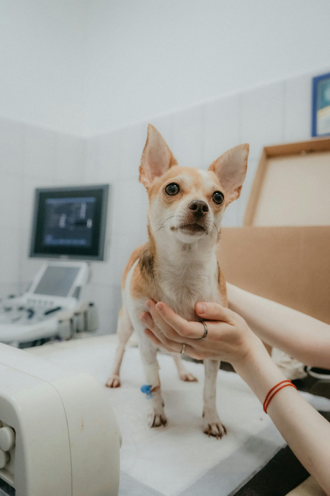
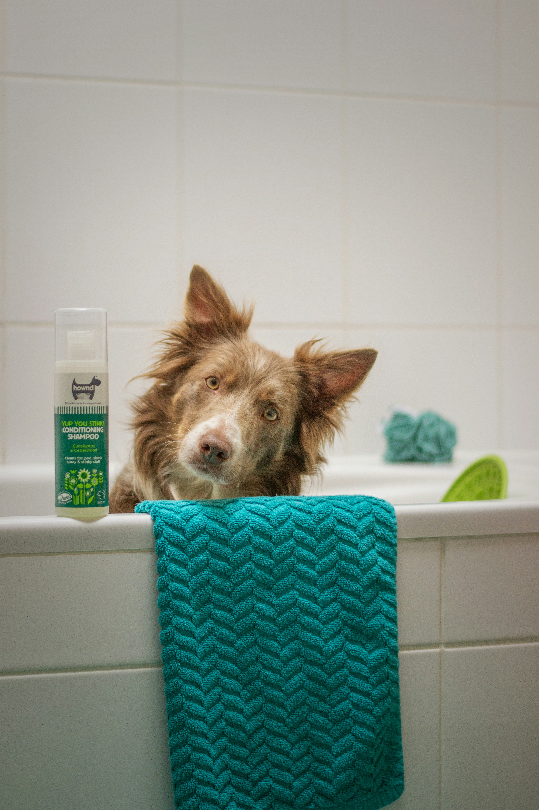

Consulta general
Evaluamos el estado de salud de perros y gatos mediante revisiones médicas, diagnóstico y orientación preventiva.
En Huellitas Vet ofrecemos atención veterinaria integral para perros y gatos, mediante servicios de prevención, diagnóstico, tratamiento y bienestar animal.
Evaluamos el estado de salud de perros y gatos mediante revisiones médicas, diagnóstico y orientación preventiva.

Ofrecemos atención veterinaria las 24 horas para situaciones que requieren evaluación y tratamiento médico inmediato.
Realizamos procedimientos quirúrgicos veterinarios, siguiendo protocolos de seguridad y cuidado del paciente.
Utilizamos imágenes diagnósticas para evaluar órganos internos y apoyar la detección de alteraciones en la salud de las mascotas.
Evaluamos la actividad eléctrica del corazón para identificar posibles alteraciones del ritmo cardíaco.

Realizamos análisis de muestras biológicas que apoyan el diagnóstico y seguimiento de enfermedades.
Brindamos cuidados y seguimiento médico a mascotas que requieren observación y tratamiento durante su recuperación.

Desarrollamos programas preventivos para proteger a perros y gatos frente a enfermedades infecciosas y parásitos.

Ofrecemos servicios de baño, cepillado y cuidado del pelaje para mantener la higiene y comodidad de perros y gatos.
Conoce nuestros horarios y encuentra el momento adecuado para visitar Huellitas Vet.
| Servicio | Días de atención | Horario |
|---|---|---|
| Consulta general | Lunes a sábado | 8:00 a. m. - 6:00 p. m. |
| Urgencias | Todos los días | 24 horas |
| Cirugía | Según programación | Cita previa |
| Ecografía, electrocardiograma y laboratorio clínico | Lunes a sábado | 8:00 a. m. - 5:00 p. m. |
| Hospitalización | Todos los días | 24 horas |
| Vacunación y desparasitación | Lunes a sábado | 8:00 a. m. - 6:00 p. m. |
| Peluquería | Lunes a sábado | 9:00 a. m. - 5:00 p. m. |
Nota: algunos procedimientos especializados requieren programación previa.
En Huellitas Vet queremos conocer a tu mejor amigo. Completa el formulario con tus datos y los de tu mascota para facilitar futuras solicitudes de atención.